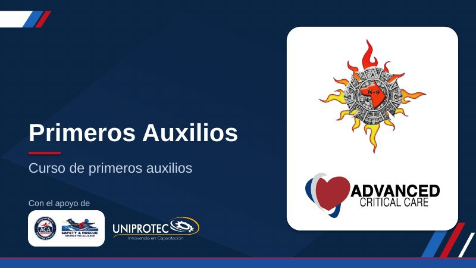
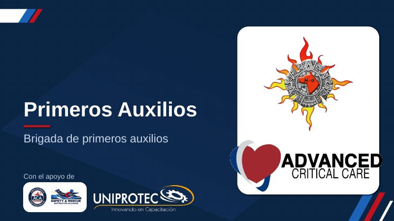
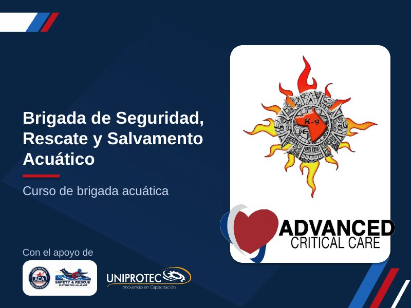

Primeros Auxilios · Curso principal
53 láminas
Las tres presentaciones. «Ver aquí» las abre al instante en cualquier teléfono, sin bajar nada, y trae botón para presentar. Para guardarlas o mandarlas, cada una viene en tres versiones:
PDF — se ve idéntico en la compu, el iPhone y WhatsApp. Es la que conviene mandar al cliente.
PowerPoint para editar — para abrirlo y cambiarlo en PowerPoint en la computadora.
PowerPoint para celular — se ve bien en el iPhone y en WhatsApp, pero no se puede editar.

53 láminas

90 láminas

57 láminas
Para pasarle el curso a alguien, manda el link de «Ver aquí»: lo abre hasta en el navegador de WhatsApp, que no deja bajar archivos. Si en el iPhone un PowerPoint para editar se ve con imágenes cruzadas entre láminas, es el visor de Apple, no el archivo: en PowerPoint se ve bien. Para verlo en el teléfono, usa el PDF o la versión para celular.